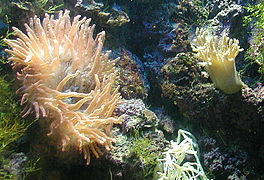
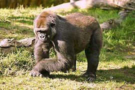

Живо́тные
Материал из Википедии — свободной энциклопедии
Животные |
 |
Научная классификация |
Домен: Эукариоты
Царство: Животные |
Международное научное название |
| Animalia Linnaeus, 1758 |
Дочерние группы |
- Подцарство Прометазо
- Подцарство Эуметазои
- Гребневики
- Стрекающие
- Bilateria
- Xenacoelomorpha
- Первичноротые
- Вторичноротые (включают в том
числе рыб, птиц и
млекопитающих)
|
1 |
Живо́тные (лат. Animalia) — традиционно (со времён Аристотеля) выделяемая категория организмов, в настоящее время рассматривается в качестве биологического царства. Животные являются основным объектом изучения зоологии.
Животные относятся к эукариотам (в клетках имеются ядра). Классическими признаками животных считаются: гетеротрофность (питание готовыми органическими соединениями) и способность активно передвигаться. Впрочем, существует немало животных, ведущих неподвижный образ жизни, а гетеротрофность свойственна грибам и некоторым растениям-паразитам.
Русское слово «животное» образовано от «живот», в прошлом означавшего «жизнь, имущество». В быту под терминами «дикие животные», «домашние животные» часто понимаются только млекопитающие или четвероногие наземные позвоночные (млекопитающие, пресмыкающиеся и земноводные). Однако в науке за термином животные закреплено более широкое значение , соответствующее латинскому Animalia (см. выше). В научном смысле к животным, помимо млекопитающих, пресмыкающихся и земноводных, относится огромное множество других организмов: рыбы, птицы, насекомые, паукообразные, моллюски, морские звёзды, черви и другие.
При этом ранее к этому царству относили многих гетеротрофных протистов и делили животных на подцарства: одноклеточные Protozoa и многоклеточные Metazoa. Сейчас название «животные» в таксономическом смысле закрепилось за многоклеточными. В таком понимании животные как таксон имеют более определённые признаки — для них характерны оогамия, многотканево́е строение, наличие как минимум двух зародышевых листков, стадий бластулы и гаструлы в зародышевом развитии. Человек относится к царству животных, но традиционно изучается отдельно. У подавляющего большинства животных есть мышцы и нервы, а не имеющие их группы — губки, пластинчатые, мезозои, книдоспоридии — возможно, лишились их вторично.
Происхождение животных
Считается, что животные произошли от жгутиковых одноклеточных, а их ближайшими известными живыми родственниками являются хоанофлагеллаты, воротничковые жгутиконосцы, морфологически сходные с хоаноцитами некоторых губок. Молекулярные исследования определили место животных в надгруппе Opisthokonta, куда также включают хоанофлагеллат, грибы и небольшое количество паразитических протист. Название Opisthokonta обозначает заднее расположение жгутика в подвижной клетке, как у большинства сперматозоидов животных, в то время как другие эукариоты, как правило, имеют передний жгутик.
Считается, что первые животные появились в середине протерозоя. Это существо под названием Grypania в виде спиралевидных углеродистых лент, отпечатки которого найдены в породах возрастом 1,9—1,4 млрд лет в окрестностях озера Верхнего. Принадлежность находки к животным небесспорно. Некоторые исследователи считают её остатками примитивных многоклеточных водорослей-эукариотов или высокоразвитой колонией цианобактерий.
Ещё одно предположительное древнее животное носит название Horodyskia, найдено в отложениях возрастом 1,44 млрд лет в Северной Америке и 1,4—1,07 млрд лет в Австралии.
Описание
Все животные являются гетеротрофами — они прямо или косвенно питаются другими живыми организмами[6]. По предпочтительному источнику энергии животные делятся на растительноядных, хищных (плотоядных), всеядных и паразитов[7].
Животные сильно различаются по продолжительности жизни. Среди самых долгоживущих — колония кораллов Savalia savaglia, чей возраст составляет 2700 лет[8]
Животные в культуре
Некоторые религии и философии отрицают принадлежность человека к животным и заявляют, что он является высшим существом относительно них. Например, это описывается в христианской книге «Бытие» из библейского цикла: там животные созданы Богом произвольно, а человек — подобно божественному, и животные отданы ему в услужение[9].
|  |
| Морской анемон — Кишечнополостные |
|  |
| Горилла — Млекопитающие |